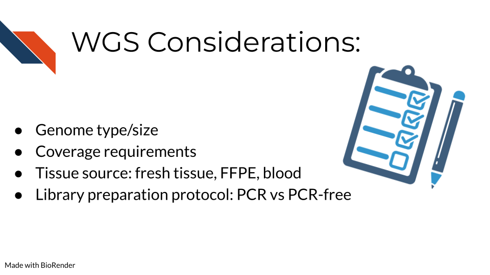

Chapter 7 Whole Genome Sequencing Methods
7.1 Learning Objectives
 The learning objectives for this course are to explain the use and application of Whole Genome Sequencing (WGS) for genomics studies, outline the technical steps in generating WGS data, and detail the processing steps for analyzing and interpreting WGS data.
The learning objectives for this course are to explain the use and application of Whole Genome Sequencing (WGS) for genomics studies, outline the technical steps in generating WGS data, and detail the processing steps for analyzing and interpreting WGS data.
7.2 WGS Overview
 At its core, whole genome sequencing is a technique to thoroughly analyze the entire DNA sequence of any organism’s genome. This includes sequencing all genes both coding and non-coding and all mitochondrial DNA. WGS is beneficial for identifying new and previously established variants related to disease and the regulatory elements of the genome including promoters, enhancers, and silencers. Investigating these regions can be massively beneficial for studying rare and complex diseases.
At its core, whole genome sequencing is a technique to thoroughly analyze the entire DNA sequence of any organism’s genome. This includes sequencing all genes both coding and non-coding and all mitochondrial DNA. WGS is beneficial for identifying new and previously established variants related to disease and the regulatory elements of the genome including promoters, enhancers, and silencers. Investigating these regions can be massively beneficial for studying rare and complex diseases.
7.3 Advantages and Disadvantages of WGS
 Alternatives to WGS include Whole Exome Sequencing (WES/WXS), which sequences the open reading frame areas of the genome or Targeted Gene Sequencing where probes have been designed to sequence only regions of interest.
The main advantages of WGS include the ability to comprehensively analyze all regions of a genome, the ability to study structural rearrangements, gene copy number alterations, insertions and deletions, single nucleotide polymorphisms (SNPs), and sequencing repeats. Some disadvantages include higher sequencing costs and the necessity for more robust storage and analysis solutions to manage the much larger data output generated from WGS.
Alternatives to WGS include Whole Exome Sequencing (WES/WXS), which sequences the open reading frame areas of the genome or Targeted Gene Sequencing where probes have been designed to sequence only regions of interest.
The main advantages of WGS include the ability to comprehensively analyze all regions of a genome, the ability to study structural rearrangements, gene copy number alterations, insertions and deletions, single nucleotide polymorphisms (SNPs), and sequencing repeats. Some disadvantages include higher sequencing costs and the necessity for more robust storage and analysis solutions to manage the much larger data output generated from WGS.
7.4 Comparing WGS to other modalities
![Comparing WGS to other sequencing modalities. The most common DNA sequencing techniques are described. Whole genome sequencing coverages all genes and non-coding DNA. 3.2 billion bases are covered when applied to human samples. This the most expensive of the techniques. Depth of coverage required for 99.9% sensitivity is 30X. Whole exome sequencing coverage is the exome or expressed genes. Approximately 45 million bases are sequenced. This is a cost-effective technique. The depth of coverage required for 99.9% sensitivity is 100X. Targeted gene panel sequencing coverages 50-500 genes. 20,000 to 62 million bases are sequenced. This is the most cost-effective technique. Depth of coverage is >500X.](resources/images/06a-WGS_files/figure-html/1YwxXy2rnUgbx_7B7ENH9wpDX-j6JpJz6lGVzOkjo0qY_g138a6ce16b7_35_18.png "Comparing WGS to other sequencing modalities. The most common DNA sequencing techniques are described. Whole genome sequencing coverages all genes and non-coding DNA. 3.2 billion bases are covered when applied to human samples. This the most expensive of the techniques. Depth of coverage required for 99.9% sensitivity is 30X. Whole exome sequencing coverage is the exome or expressed genes. Approximately 45 million bases are sequenced. This is a cost-effective technique. The depth of coverage required for 99.9% sensitivity is 100X. Targeted gene panel sequencing coverages 50-500 genes. 20,000 to 62 million bases are sequenced. This is the most cost-effective technique. Depth of coverage is >500X.") Compared to WES and Targeted Gene Sequencing, WGS is the most expensive but requires the lowest depth of coverage to achieve 95% sensitivity. In other words, WGS requires sequencing each region of the genome (3.2 billion bases) 30 times in order to confidently be able to pick up all possible meaningful variants. (Sims et al. 2014) goes into more depth on how these depths are calculated.
Compared to WES and Targeted Gene Sequencing, WGS is the most expensive but requires the lowest depth of coverage to achieve 95% sensitivity. In other words, WGS requires sequencing each region of the genome (3.2 billion bases) 30 times in order to confidently be able to pick up all possible meaningful variants. (Sims et al. 2014) goes into more depth on how these depths are calculated.
Alternatively, WES is a more cost effective way to study the genome, focusing just on the genes that are actively expressed. In this case, each gene must be sequenced 80-100x for sufficient sensitivity to pick up meaningful variants.
In targeted gene sequencing, a panel of 50-500 regions of interest are selected. This technique is very applicable for studying a set of specific genes of interest at great depth to identify all varieties of mutations within those specific genes. These genes must be sequenced at much greater depth (>500x) to confidently identify all meaningful variants. This page from Illumina also provides information regarding sequencing depth considerations for different modalities.
Additional references: WGS: (Bentley et al. 2008) WES: (Clark et al. 2011) Targeted: (Bewicke-Copley et al. 2019)
7.5 WGS Considerations
 Some important considerations for WGS include: - What genome you are studying and the size of this genome. Included in this considerations is whether this genome has been sequenced before and you will have a “reference” genome to compare your data against or whether you will have to make a reference genome yourself. This bioinformatics resource provides a great overview of genome alignment. - The depth of coverage for sequencing is an important consideration. The typical recommendation for WGS coverage is 30x, but this is on the lower side and man researchers find it does not provide sufficient coverage compared to 50x. Illumina has an infographic that explains this information - The tissue source and whether genetic alterations were introduced during processing are important. Fixation for formalin-fixed paraffin embedded (FFPE) can introduce mutations/genetic changes that will need to be accounted for during data analysis. This page from Beckman addresses many of the questions researchers often have about utilizing FFPE samples for their sequencing studies. - The library preparation method of DNA amplification via PCR is very important as PCR can often introduce duplicates that interfere with interpreting whether a mutant gene is truly frequent or just over amplified during sequencing preparation. Illumina provides a comparison of using PCR and PCR-free library preparation methods on their website.
7.6 WGS Pipeline Overview
 In order to create WGS data, DNA is first extracted from a specific sample type (tissue, blood samples, cells, FFPE blocks, etc.). Either traditional (involving phenol and chloroform) or commercial kits can be used for this first step. Next, the DNA sequencing libraries are prepared. This involves fragmenting the DNA, adding sequencing adapters, and DNA amplification if the input DNA is not of sufficient quantity. After sequencing, data is analyzed by converting and aligning reads to generate a BAM file. Many analysis tools will use the BAM file to identify variants, which then generates a VCF file. More information about sequencing and BAM and VCF file generation can be found here in the sequencing data chapter.
In order to create WGS data, DNA is first extracted from a specific sample type (tissue, blood samples, cells, FFPE blocks, etc.). Either traditional (involving phenol and chloroform) or commercial kits can be used for this first step. Next, the DNA sequencing libraries are prepared. This involves fragmenting the DNA, adding sequencing adapters, and DNA amplification if the input DNA is not of sufficient quantity. After sequencing, data is analyzed by converting and aligning reads to generate a BAM file. Many analysis tools will use the BAM file to identify variants, which then generates a VCF file. More information about sequencing and BAM and VCF file generation can be found here in the sequencing data chapter.
7.7 WGS Data Pre-processing
 Raw sequencing reads are first transformed into a fastq file (more information about fastq files can be found here in the sequencing data chapter in the Quality Controls section. Then the sequencing reads are aligned to a reference genome to create a BAM file. This data is sorted and merged, and PCR duplicates are identified. The confidence that each read was sequenced correctly is reflected in the base quality score. This score must be recalibrated at this step before variants are called. A final BAM file is thus created. This can be used for future analysis steps include variant or mutation identification, which is outlined on the following slide.
Raw sequencing reads are first transformed into a fastq file (more information about fastq files can be found here in the sequencing data chapter in the Quality Controls section. Then the sequencing reads are aligned to a reference genome to create a BAM file. This data is sorted and merged, and PCR duplicates are identified. The confidence that each read was sequenced correctly is reflected in the base quality score. This score must be recalibrated at this step before variants are called. A final BAM file is thus created. This can be used for future analysis steps include variant or mutation identification, which is outlined on the following slide.
7.8 Commonly Used Tools
 The following link provides the data analysis pipeline written by researchers in the NCI division of the NIH and provides a helpful overview of the typical steps necessary for WGS analysis.
The following link provides the data analysis pipeline written by researchers in the NCI division of the NIH and provides a helpful overview of the typical steps necessary for WGS analysis.
Here are many of the tools and resources used by researchers for analyzing WGS data.
7.9 Data pre-processing tools
In most cases, all of these tools will be used sequentially to prepare the data for downstream mutational and copy number variation (CNV) analysis.
- Bedtools including the bamtofastq function, which is the first step in converting data off the sequencer to a usable format for downstream analysis
- Samtools including tools for converting fastq to BAM files while mapping genes to the genome, duplicate read marking, and sorting reads
- Picard2 including tools to covert fastq to SAM files, filter files, create indices, mark read duplicates, sort files, and merge files
- GATK is a comprehensive set of tools from the Broad Institute for analyzing many types of sequencing data. For pre-processing, the print read function is very beneficial for writing the reads from a BAM or SAM file that pass specific criteria to a new file
7.10 Tools for somatic and germline variant identification
These tools are used to identify either somatic or germline mutations from a sequenced sample. Many researchers will often use a combination of these tools to narrow down only variants that are identified using a combination of these analysis algorithms. All of these mutation calling tools except SvABA can be used on both WGS and WES data. - Mutect2 This is a beneficial variant calling tool with functions including using a “panel of normals” (samples provided by the user of many normal controls) to better compare disease samples to normal and filtering functions for samples with orientation bias artifacts (FFPE samples) called F1R2, which is explained in the link above. - Varscan 2 This is a helpful tool that utilizes a heuristic/statistic approach to variant calling. This means that it detects somatic CNAs (SCNAs) as deviations from the log-ratio of sequence coverage depth within a tumor–normal pair, and then quantify the deviations statistically. This approach is unique because it accounts for differences in read depth between the tumor and normal sample. Varscan 2 can also be used for identifying copy number alterations in tumor-normal pairs. - MuSE This is a beneficial mutation calling tool when you have both tumor and normal datasets. The Markov Substitution Model for Evolution utilized in this tool models the evolution of the reference allele to the allelic composition of the tumor and normal tissue at each genomic locus. - SvABA This tool is especially useful for calling insertions and deletions (indels) because it assembles aberrantly aligned sequence reads that reflect indels or structural variants using a custom String Graph Assembler. Indels can be difficult to detect with standard alignment-based variant callers. - Strelka2 This is a small variant caller designed by Illumina. It is used for identifying germline variants in cohorts of samples and somatic variants in tumor/normal sample pairs. - SomaticSniper SomaticSniper can be used to identify SNPs in tumor/normal pairs. It calculates the probability that the tumor and normal genotypes are different and reports this probability as a somatic score. - Pindel Pindel is a tool that uses a pattern growth approach to detect breakpoints of large deletions, medium size insertion/inversion, tandem duplications. - Lancet This is a newer variant calling tool that uses colored de Bruijn graphs to jointly analyze tumor and normal pairs, offering strong indel detection. More information about the processes used in this variant calling tool can be found here
Researchers may want to create a consensus file based on the mutation calls using multiple tools above. OpenPBTA-analysis shows an open source code example of how you might compare and contrast different SNV caller’s results.
7.11 Tools for variant calling annotation
These are beneficial for providing functional meaning to the mutational hits identified above.
- Annovar This is a helpful tool for annotating, filtering, and combining the output data from the above tools. It can be used for gene-based, region-based, or filter-based annotations.
- GENCODE This tool can be used to identify and classify gene features in human and mouse genomes.
- dbSNP This is a resource to look up specific human single nucleotide variations, microsatellites, and small-scale insertions and deletions.
- Ensembl This resource is a genome browser for annotating genes from a wide variety of species.
7.12 Tools for copy number variation analysis
Similar to the mutation calling tools, many researchers will use several of these tools and investigate the overlapping hits seen with different copy number variant calling algorithms:
- GATK GATK has a variety of tools that can be used to study changes in copy numbers of genes. This link provides a tutorial for how to use the tools.
- AscatNGS These tools (allele-specific copy number analysis of tumors) are specific for WGS copy number variation analysis. They can be used to dissect allele-specific copy numbers of tumors by estimating and adjusting for tumor ploidy and nonaberrant cell admixture.
- TitanCNA This tool is used to analyze copy number variation and loss of heterozygosity at the subclonal level for both WGS and WES data in tumors compared to matched normals. It accounts for mixtures of cell populations and estimates the proportion of cells harboring each event. The Ha lab has developed a snakemake pipeline to more easily use this tool. Ha et al. published a paper describing this tool in detail here
- gGNV This is a germline CNV calling tool that can be used on both WGS and WES data. This tool has booth COHORT and CASE modes. COHORT mode is used when providing a cohort of germline samples where CASE mode is used for individual samples. More details about these modes are described in the link above.
- BIC-seq2 This tool is used to detect CNVs with or without control samples. The steps involved in this data processing tool include normalization and CNV detection.
7.13 Tools for data visualization
These tools are often used in parallel to look at regions of the genome, develop plots, and create other relevant figures:
- IGV IGV is an interactive tool used to easily visualize genomic data. It is available as a desktop application, web application, and JavaScript to embed in web pages. This application is very beneficial for visualizing both mutational and CNV data for WGS. IGV has many tutorials on YouTube that are helpful for using the tool to its full potential.
- Maftools Maftools is an R package that can be used to create informative plots from your WGS data output. It has tools to import both VCF files and ANNOVAR output for data analysis.
- Prism Prism is a widely used tool in scientific research for organizing large datasets, generating plots, and creating readable figures. WGS data regarding mutations and CNV can be used as input for creating plots with this tool.
7.14 Resources for WGS
Online tutorials: - Galaxy tutorials - NCI resources - Bioinformaticsdotca tutorial
Papers comparing analysis tools: - (Hwang et al. 2019) - (Naj et al. 2019) - (He et al. 2020)